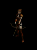
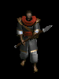
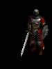
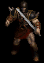

| |
资料片中的雇佣兵可以说提升到了一个前所未有的层次, 首先, 你在第一场景得到的雇佣兵可以陪伴你完成整个游戏 (当然, 如果你愿意的话, 每个场景的雇佣兵都可以), 他们会在战斗的过程中和你一起获得经验值, 他们会不断的升级,并且可以在各个场景中自由的移动.
雇佣兵如果受伤, 是可以当时治疗的, 只要把治疗药剂拿起后放到他们的图标上, 就会慢慢的恢复生命, 并不需要再回到城镇里进行治疗. 但是要注意: 恢复生命是有一个过程的, 所以最好提前就给他们使用治疗药剂, 免得时间差上出问题.
资料片的雇佣兵可以使用装备, 包括武器, 头盔, 盔甲! 只要他们的属性满足装备的要求就可以了,但是每个雇佣兵都只能使用特定的一种装备类型.通过使用装备,往往你的雇佣兵比你还要强很多.
之所以说资料片中的雇佣兵是完成游戏的关键之处, 主要是因为雇佣兵现在可以复活, 你可以到固定的NPC处去花些钱将他们复活. 有了这点, 你就可以重点培养一个你觉的最适合你的人物的雇佣兵, 将他们的装备和属性培养到最强.
下面是四个场景雇佣兵的详细介绍:
第一场景:罗格侦察员
|
 |
第一场景的雇佣兵可以从村庄中的 卡夏 处雇佣到,前提是你完成了第二个任务.他们只能使用弓箭类的武器.所有的都会使用[内视]这项技能,而部分会使用冰箭或火箭(在雇佣的窗口中会有提示). |
每次升级: +1 力量, +2 点敏捷, 防御 +6.5, +8 生命, 所有抗性 +1.5
技能: 冰箭/内视 或 火箭/内视
可使用装备: 盔甲, 头盔, 弓 (无法使用十字弓)
注意: 这里的雇佣兵并不是亚马逊, 所以无法使用那些是有亚马逊专用的物品. |
| 另外: 如果雇佣兵的身上有一个技能 +3 的装备的话, 会有新的技能出现. |
第二场景:沙漠雇佣兵
|
 |
场景二的雇佣兵可以在城镇中的 格雷兹 处雇佣到. 他们是以近战型的攻击为主. 他们主要分为三个类型: 进攻(Combat), 防御(Defense), 攻击(Offense)! 如果他们有什么特殊技能的话,会在雇佣时的窗口上显示出来的. |
每次升级: +1.5 力量, +1.5 敏捷, 防御 +19, +25 生命, 所有抗性 +1.5
技能: 猛刺 和一种光环
进攻/普通难度: 祈祷
进攻/噩梦难度: 刺针
进攻/地狱难度: 祈祷
防御/普通难度: 反抗
防御/噩梦难度: 神圣冰冻
防御/地狱难度: 反抗
攻击/普通难度: 祝福瞄准
攻击/噩梦难度: 力量
攻击/地狱难度: 祝福瞄准
可使用装备: 盔甲, 头盔, 矛类,长棍类和标枪类 (不能投掷)
|
| 注意: 这里的雇佣兵相对于第一场景的来说可能更适合法师类的人物使用, 攻击力比较高. 而且升级后属性的提升也比前一个场景的要多.这里的雇佣兵会为你提供光环支持. 你应该根据你的需要选择一个最理想的光环类型. |
第三场景:铁狼 |
 |
第三场景的雇佣兵可以从村庄中的 艾席拉 处雇佣到. 他们会使用火,电,冰三种法术攻击. 你可以在雇佣的窗口看到他们是使用何种法术的. |
每次升级: +1.5 力量, +1.5 敏捷, 防御力 +4.5, +6 生命, 所有抗性 +1.5
技能:
标示有 闪电 的会使用 充能弹/闪电;
标示有 冰冻 的会使用 冰尖柱/寒冰冲击波/冰冻盔甲;
标示有 火焰 的会使用 地狱火/火球两种技能.
可使用装备: 盔甲, 头盔, 剑和盾牌 |
| 注意: 最好给他们寻找那些带有快速施放法术的装备, 这样你会有一个强力的法师帮助你做战. |
第五场景:野蛮人
|
 |
第五场景的雇佣兵可以从村庄中的 夸尔凯克 处雇佣到,但你要完成他给你的任务. |
每次升级: +2 力量, +1.5 敏捷, 防御力 +7.5, +12 生命, 所有抗性 +1.5
技能:重击 或 击昏
可使用装备: 盔甲, 头盔, 野蛮人专用头盔和一把剑 (无论单手还是双手,都只能拿一把) |
| 注意: 野蛮人是整个游戏中最好的雇佣兵, 最好给他们装备上攻击力尽可能高的剑, 你会发现他们简直是战无不胜的. |
只要支付一定的金钱, 雇佣兵们就会为你作战. 他们非常忠诚直至战死不会回头. 他们对你的帮助非常大. 每个玩家都应该拥有一个! 雇佣兵会跟随你并自动攻击靠近的敌人. 你可以在小地图上看到一个墨绿色的 "X". 你只能拥有一个雇佣兵. 每个小队成员如果都有一个雇佣兵的话, 那么就相当于有 16 个人.
- 一旦你有了雇佣兵后左上角会出现相应的图标. 上面显示雇佣兵的血量和头像. 你可以使用 Z 键关掉图标.
- 雇佣兵提升准确率非常重要 (关键是他的等级), 当升级后他的生命会补满.
- 你不能攻击你的雇佣兵, 同样他也不能攻击你或你的队友.
- 城镇中的 NPC 可以治疗雇佣兵. 圣骑士的祈祷灵气 或 圣光弹也可以治疗雇佣兵. 团队性的法术和技能对雇佣兵同样起作用. 井水可以治疗雇佣兵和其他仆从. 你可以使用药剂对他们进行治疗.
- 第四场景中没有雇佣兵. 任何时候你都可以把雇佣兵带入第四场景, 并且可以复活他们.
- 如果你不治疗他们, 那么他们会中毒而死.
雇佣兵信息
当你雇佣他们时需要一次性支付雇佣费用. 价格会在雇佣时的列表中显示. 雇佣列表还会显示一些其他的信息, 例如等级, 伤害, 特殊攻击和生命点数.
属性和经验值
在 暗黑破坏神II: 毁灭之王 中, 雇佣兵有他们自己的属性设置: 力量, 敏捷, 生命, 伤害, 防御和经验值. 雇佣兵杀死怪物后, 会获得相应的经验值. 当获得了足够的经验值后就会提升到新的等级, 属性会随之提升. 你可以通过装备来提升他们的属性. 保持对他们的注意力, 他们对你的帮助非常大. 他们杀死怪物时你会获得全部的经验值, 而你杀死怪物时也相似的他们获得全部的经验值.
雇佣兵不会从你团队其他人那里杀的怪获得经验值, 但是他们可以从你召唤的怪物或角色那里获得相应的经验值.
一旦雇佣兵和你等级相同, 他们将不会再获得经验值. 只有在玩家升级之后才会继续获得经验值.
雇佣兵在高于其自身等级较多的场景时, 是不能通过分享玩家经验而升级的. 所以你应该寻找不同的场景锻炼你的雇佣兵. 尽量保持你的等级与雇佣兵等级一致. 尽快复活死去的雇佣兵, 这样才能保证雇佣兵的等级不会落后你的等级太多.
雇佣兵的等级
雇佣兵的级别不会超过你的角色级别. 你可以在较高级别时直接雇佣高级别的雇佣兵. 但是他们在战斗中将不会获得经验值. 除非你升级. 一旦你的等级提升, 他们也会很快的升级, 因为他们只需要很少的经验值.
雇佣兵最高级别为 98.
雇佣兵的抗性
雇佣兵的抗性会随着升级而提升. 他们也受到噩梦和地狱难度的抗性降低惩罚.
雇佣兵的伤害
最小伤害 = [(武器最小伤害)*(力量+100)/100]+基础最小伤害
最大伤害 = [(武器最大伤害)*(力量+100)/100]+基础最大伤害
提升的例如火焰和冰冷伤害也会计算进这个公式的总伤害, 增强伤害 % 只对雇佣兵的武器产生效果. 并且只受力量的影响.
雇佣兵的持续性
雇佣兵自愿在游戏的各个难度和场景跟随你. 实际上, 你可以带着你第一场景的雇佣兵完成普通, 恶梦, 地狱三个难度的冒险. 你可以在任何时间更换你的雇佣兵, 但是你不能在同一时间有两个以上的雇佣兵. 如果你雇佣了新的雇佣兵, 就意味着你之前的雇佣兵退休了, 不能再为你服务. 所以, 在你确定了更换雇佣兵后, 请你打开雇佣兵的装备栏, 取下你为他装备的物品, 因为这些物品在你更换雇佣兵后会丢失.
雇佣兵的死亡
当雇佣兵死亡, 你可以返回离你最近的佣兵主管处付费复活你的伙伴, 或者雇佣一个新伙伴. 如果你选择复活, 复活的雇佣兵将继续为你服务, 并且所有属性不变. 如果你选择雇佣一个新伙伴, 之前的雇佣兵就不会在为你服务了, 你为他装备的物品也随之消失. 注意: 玩家角色的死亡意味你的雇佣兵也死亡.
随着雇佣兵级别的提高,你需要花费更高的价格来复活他们. 上限是 50,000 金币.
在第五场景, 泰瑞尔复活雇佣兵也是需要支付费用的. 天使为什么也要金币呢? 天使也有花钱的时候.
如何让雇佣兵更好的存活?
为雇佣兵装备好的物品, 尽量寻找让雇佣兵抗性最大化的物品. 给他们尽可能高防御的盔甲. 使用高伤害的武器. 在战斗中注意治疗你的雇佣兵, 一旦他们的生命值开始下降, 马上给他们使用治疗药剂. 切记雇佣兵使用治疗药剂是和你一样的, 恢复需要一个过程. 回复活力药剂可以立即恢复生命, 在你的雇佣兵生命危机的时候马上使用. 当战斗比较紧张的时候, 注意及时脱离战斗进行恢复. 你可以使用城镇卷轴马上回去, 访问治疗医师恢复生命. 水井也是很好的治疗手段. 总之尽量寻找好的装备, 及时治疗, 迅速脱离战斗是保证雇佣兵生存的最好办法, 这样可以为你省下很多复活雇佣兵所用的时间和金钱.
雇佣兵的法术
雇佣兵可以象玩家一样施放法术. 雇佣兵有着无限的法力值, 所以, 你不必考虑是否为他们使用法力药剂或者为他们装备带有法力恢复属性的装备. 玩家不能控制雇佣兵施放何种法术, 某类雇佣兵只能施放某一种法术. 如果你选择法术类的雇佣兵, 你应该在雇佣他之前, 考虑好你需要会何种法术的雇佣兵.
雇佣兵可以使用治疗药剂
按住 SHIFT, 不管你是右键点击还是热键都可以使用你腰带上的药剂对你的雇佣兵进行治疗.
你可以通过这样的方式直接治疗你的雇佣兵: 在背包里左键点击治疗药剂或者恢复药剂, 将药剂移动到屏幕左上角的雇佣兵头像上, 当头像图标加亮后, 再次点击左键. 你也可以用水井治疗雇佣兵. 将鼠标指针放在雇佣兵头像上 3 秒后, 直到头像加亮出现这样的字样"为雇佣兵治疗.右键点击打开雇佣兵装备栏"时, 同样可以对雇佣兵进行治疗.
雇佣兵有无限的法力, 所以不需要使用法力药剂.
雇佣兵的恢复
雇佣兵会不停的恢复生命.
雇佣兵 vs. Bosses
雇佣兵的伤害在 BOSS 战的时候,普通难度有 50%,噩梦难度有 35%,地狱难度有 25%. 此外, 雇佣兵在每个场景的最终 BOSS 战时, 受到的伤害会增加10倍.
玩家对玩家
当玩家对玩家时, 玩家或雇佣兵对其他玩家的伤害变为 1/4.
当玩家对玩家时, 雇佣兵对其他玩家雇佣兵的伤害减少 1/2.
给雇佣兵装备
你可以为你的雇佣兵装备例如盔甲, 头盔和武器. 雇佣兵装备物品同样有力量, 敏捷, 等级的需求, 并且为雇佣兵装备武器必须符合雇佣兵的武器类型. (例如, 第一场景的弓箭手类的雇佣兵只能装备弓, 而不能装备短剑, 而第二场景城市守卫类型的雇佣兵只能使用长柄类武器, 而不能装备十字弓). 在游戏界面的迷你面板上左键点击相应按键或着热键 O, 都可以打开雇佣兵物品栏, 在这里可以为雇佣兵装备物品和了解雇佣兵的具体信息. 当然你也可以将鼠标指针放在雇佣兵头像上 3 秒, 直到头像加亮出现这样的字样"为雇佣兵治疗, 右键点击打开雇佣兵装备栏"的时候, 为雇佣兵装备物品. 一旦超出一定范围, 玩家将不能为雇佣兵装备物品.
寻找属性好, 高抗性, 高防御的物品装备你的雇佣兵!
雇佣兵开始时就有自己的基础武器, 但这个武器不会在雇佣兵装备界显示出来. 你可以用新的武器去代替这件基础武器, 但是你不能移除这件基础武器. 就算你将你雇佣兵的装备全部拿掉, 这件基础武器仍然存在. 比如, 你不能将弓箭手的弓拿掉, 她一直都装备着那个基础弓.
你可以试着为雇佣兵装备各种武器, 以了解他到底可以使用哪些物品. 如果他不能使用这个物品, 他会给你提示. 雇佣兵的外观不会因装备物品而得到改变. 例如无论装备什么弓, 都只会显示最初的基础弓的模样.
雇佣兵可以使用大部分魔法奖励包括 + 技能物品.
不错的物品
具有 生命补满 属性的物品对雇佣兵很有帮助. 雇佣兵可以装备无形物品, 无形物品装备于雇佣兵身上耐久不会减少. 暗金物品, 稀有物品都可以用于雇佣兵. 尽量提升雇佣兵的抗性也是很重要的.
错误的物品
雇佣兵不需要 +法力/精力物品或 % 击中偷取法力. +体力 物品也不会起作用.
如何获得雇佣兵?
你可以在达到 9 级或是完成第一场景第二个任务后得到你的第一个雇佣兵.
雇佣兵会随你一同进入 城镇传送门, 游戏, 小站, 场景, 游戏难度
当出现上面这些情况时, 雇佣兵很快会出现在你的身边.
当你离开游戏, 雇佣兵也会同时保存退出游戏并与你一起进入新的游戏.
当雇佣兵杀掉怪物时你是否会获得经验?
是的.
雇佣兵或召唤仆从会分享我的经验吗??
不. 你不会因为使用雇佣兵而损失经验值.
当我升级时, 为什么我的雇佣兵说 "我感觉更加强壮了"?
这说明雇佣兵等级提升了. 这会提升 '% 命中率' , 并且会恢复满生命. 你可以尝试去帮助他们尽快的提升等级.
我可以解散雇佣兵吗?
你不可以解散你的雇佣兵. 如果你不需要雇佣兵了, 可以尝试处于一个危险的场景, 这样你的雇佣兵会很快死去!
|
|